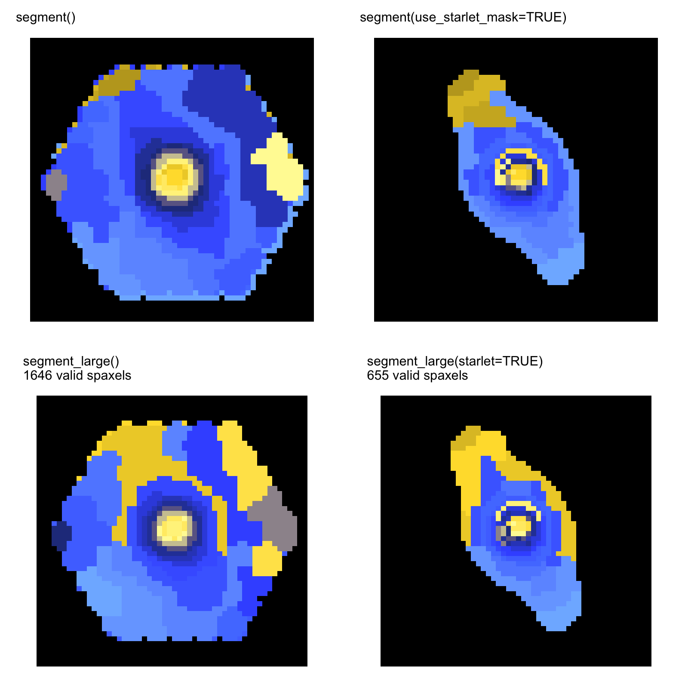

These panels are existing real-data outputs, not outputs of the
synthetic first-run cube. Their provenance is recorded in
docs/website_image_provenance.csv; unresolved generator,
configuration, and machine-readable product mappings are marked there
rather than inferred from filenames.
MaNGA segmentation mosaic

The visual sequence is: IFS cube, eligible spatial support,
categorical spectral regions, then summed regional spectra. The image
directly shows the input and region-map stages; regional spectra are
obtained with summarize_cluster_spectra() and are not
implicitly encoded by the colours.
Exact and sparse-graph comparison

segment() and
segment_large() with and without starlet support. This
panel is retained with an explicit incomplete-provenance status until
its exact generator and configuration are verified.
Use the same scientific configuration record for a new observed cube:
library(capivara)
library(FITSio)
cube <- FITSio::readFITS("/path/to/verified-input-cube.fits")
seg <- segment_large(
input = cube,
Ncomp = 25,
use_starlet_mask = TRUE,
starlet_J = 5,
starlet_scales = 2:5,
include_coarse = FALSE,
denoise_k = 0,
positive_only = TRUE,
mask_mode = "na",
knn_k = 100
)
regional_spectra <- summarize_cluster_spectra(seg)$sum_spectraThe path is intentionally a user-supplied placeholder. The executable Getting started guide contains the self-contained first run with no hidden file dependency.
Kinematic and model-specific examples
The Kinematic analysis guide separates line-map segmentation from an axisymmetric disc comparison. The Bisymmetric bar models guide applies only when independent evidence supports a bar hypothesis; neither example changes the interpretation of ordinary spectral-region labels.